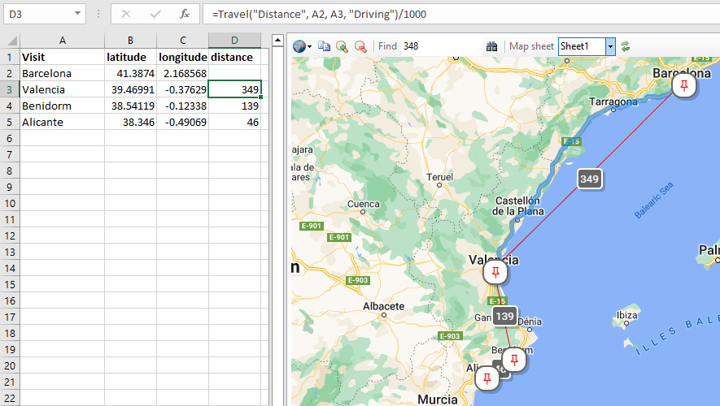

-
Open this workbook gettingstarted.xlsm
The trip is the classic Costa del Sol, a traditional British pub crawl 😉. - To draw the cities on the map we need their coordinates : latitudes and longitudes. Select cell B1. In the Geodesix ribbon, click the Insert Field icon. In the left pane, double-click Latitude and then double-click Longitude. In the right pane, double-click distance. Close the Field Picker by pressing Escape or Enter.
- Select cell B2. Click the Insert Function icon. Click Geocode, the Get Geodesic Information window opens.
- Leaving the cursor in the request field, click cell B1 and then click cell A2. Click OK to close the prompt.
- Select cell B2 and observe the formula. Extend the formula to C2. Extend the formulas B2:C2 down to B5:C5.
- Select cell D3, next to Valencia. In the ribbon, click Insert Function. Choose Travel using the dropdown, set type to "Distance" and press Tab to move to the origin field. Click cells A2 and then A3. Select mode "Driving" and click OK.
-
Select cell D3 again and modify the formula by copy-pasting this:
to convert metres to kilometres. Extend the D3 formula down to D4 and D5.=Travel("Distance", A2, A3, "Driving")/1000 -
Select column D and set the format to Numeric, 0 decimals.
In the Geodesix ribbon, click View Map.
It is a 349 Km drive from Barcelona to Valencia. With cell D3 selected, click View⇒Locate in the Geodesix ribbon.
Observe the drive path, in blue, along the coast, just north of Tarragona:
 - In the Geodesix ribbon, click Tools⇒Drawing. Experiment by changing the values, for example: icon to $Home, iconSize to 12. Close Drawing Preferences.
- In the Geodesix ribbon, click Export HTML. Open the saved HTML file with a browser. This file is completely self-contained, you can send it by email and the recipient will be able to view it, without having Excel or Geodesix installed.
That's it ! For more advanced explanations, browse the Example worksheets linked from the main help page (click the Home icon, top-left on this page).